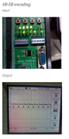
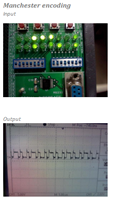
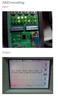

Electronics freak, hardware tinkerer, movie buff, android lover and blogger
Encoding/Line code means to wrap data in some format or send it with other redundant data, so that it can be easily recovered at the receiver side even tough noise is present. Various encoding schemes are used keeping in the mind the amount of data to be transferred and the noise in the system/channel. In this project, we implemented 3 encoding schemes in hardware namely Manchester coding, Non Return to Zero Inverse (NRZI) and 4B-5B schemes.
We made a system in which all 3 encoding schemes are implemented and the user chooses than by selecting the proper combination of the input switches. The data is given via the 16 switches and the output can be seen on the oscilloscope.
Implementing the system in Verilog was easy but the demonstration on the real FPGA kit was a bit difficult as the hardware has its own limitations. The Spartan 3 FPGA kit was used for the project.
The Images below show the output if the schemes:
|  |  |  |
I was in charge of writing the verilog code and testing it on the hardware.